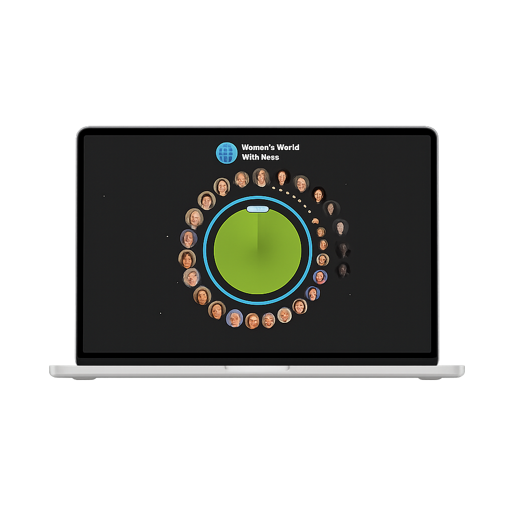

Ik hou van schaatsen omdat het me een gevoel van vrijheid geeft. De snelheid, de koude lucht en het verbeteren van mijn techniek maken het een geweldige manier om actief te zijn.
Website from scratch for school
UX designer
Ontdek meer over mij
Tekenen
Tekenen helpt me mijn creativiteit te uiten en mijn gedachten visueel vast te leggen. Ik hou van realistisch tekenen, omdat ik geniet van de uitdaging om details precies goed te krijgen. Het geeft me rust en voldoening om iets tot leven te brengen op papier.
Astrologie
Ik vind het leuk om horoscopen te lezen en verbanden te ontdekken tussen sterrenbeelden en karaktereigenschappen. Het is interessant hoe de stand van de sterren invloed kan hebben op zoveel dingen.

Ik hou van sieraden
IIk hou van sieraden omdat ze een persoonlijke betekenis hebben en elke outfit compleet maken. Ik heb mijn eigen sieradenbedrijf, Gimeah, waar ik unieke en duurzame sieraden ontwerp en verkoop.
Ik woon in..
Mijn woonplaats voelt als thuis door de gezellige sfeer en mooie omgeving. Ik geniet van de rust, maar ook van de levendigheid in de stad wanneer ik eropuit ga. Het is fijn om bekende plekken te hebben waar ik me op mijn gemak voel en nieuwe inspiratie opdoe.
Leerdoelen Meesterproef
3D CSS met Tree.js
Ik vind het creëren van 3D-omgevingen en interactieve elementen op websites heel tof. Door Tree.js te leren, kan ik websites visueel aantrekkelijker maken met diepte en dynamiek. Het stelt me in staat om meer geavanceerde, visuele projecten te maken die niet alleen mooi zijn, maar ook de gebruikerservaring verbeteren door een nieuwe dimensie aan interactie toe te voegen.
GSAP Animaties
GSAP (GreenSock Animation Platform) biedt krachtige tools voor het creëren van vloeiende, performante animaties. Ik wil me hierin verdiepen, omdat animaties niet alleen de esthetiek verbeteren, maar ook de interactie op een website vergemakkelijken. Door het leren van GSAP kan ik soepelere en complexere animaties maken zonder dat de prestaties van mijn websites worden beïnvloed. Dit stelt me in staat om dynamische en aantrekkelijke interfaces te creëren.
Samenwerken
Samenwerken is een essentiële vaardigheid in elk project, vooral in de creatieve en technische industrie. Ik wil mijn samenwerkingstechnieken verbeteren om effectiever te communiceren met anderen, zowel in groepsprojecten als in professionele settings. Het leren omgaan met verschillende perspectieven en het combineren van ideeën zal niet alleen mijn persoonlijke groei bevorderen, maar ook het succes van de projecten waar ik aan werk.
Hackaton Reflectie
Ik vond de hackathon een leerzame en leuke manier om mijn skills verder uit te breiden. Het samenwerken met anderen aan een concreet probleem heeft me niet alleen geholpen om nieuwe technieken onder de knie te krijgen, maar ook om mijn creatief en oplossingsgericht denken te verbeteren. Door de tijdsdruk leerde ik sneller beslissingen nemen en efficiënt te werken, wat in toekomstige projecten zeker van pas zal komen. Daarnaast was het inspirerend om te zien hoe andere teams hun ideeën tot leven brachten, wat me motiveerde om ook buiten de hackathon om verder te blijven leren en experimenteren.

Weekly Nerd
01
Kilian Valkhof
Stop using JS for that
02
Peter-Paul Koch
Pay the Web Forward with Web Monetization
03
Roel Nieskens
Moderne Webtypografie & Variable Fonts
04
Cassie Evans
Beyond Tweening
05
Nils Binder
Unwrapping Web Design
06
Jeremy Keith
Build the Web the Webby Way
07
Rosa
Hack Party's
08
Niels Leenheer
Bonnenprinters
09
Nienke de Keizer
Importance of Accessibility
10
Dave Bitter
AI, Voice en Digitale Experience
11
Steve
Twitter Automatisering en Data Extractie
12
Clarke Verdel
Code Testing
13
Q42
Toegankelijkheid, Techniek & Projecten
14
Pre CSS Day
Nils Binder & Miriam Suzanne
15
IO Digital Pre CSS Day
16
IO Digital Pre CSS Day
Carmen Ansio, Vadim Makeev
Kilian Valkhof
Stop Using JS for That
2 ways of programming Imperative programming: you give very specific instructions through steps, like with javascript. Declarative programming > You describe what you want without all of the nessecary steps.
Rule of the Least Power & Slimme HTML/CSS-technieken
De "Rule of the Least Power" stelt dat je altijd de minst krachtige technologie moet gebruiken die geschikt is voor je doel. Begin met HTML, voeg CSS toe als dat nodig is, en gebruik JavaScript alleen als laatste optie. Dit zorgt voor betere prestaties, meer toegankelijkheid en makkelijker onderhoud.
Voorbeelden zijn: gebruik een <a>-element voor navigatie in plaats van een
JavaScript-button,
of pas standaard form-elementen aan met appearance: none zonder hun functionaliteit te
verliezen.
Handige technieken
accent-colorvoor het stijlen van checkboxes en radio-buttonsscroll-margin-topom ruimte boven ankers te houden:targetom aangeklikte elementen automatisch te highlighten@starting-styleom het beginpunt van een animatie te bepalen:has()als conditionele CSS-selector::picker()om select-dropdowns visueel aan te passen (alleen in Chrome)
De kernboodschap is: denk goed na over wat je echt nodig hebt, en kies altijd voor de eenvoudigste, minst zware oplossing. Dat zorgt voor betere websites — zowel technisch als gebruiksvriendelijk.
Informatie +
Dit is het antwoord op vraag 1 van Titel 1.
Notities +
Dit is het antwoord op vraag 2 van Titel 1.
Wat ik er van vind +
Dit is het antwoord op vraag 2 van Titel 1.
Peter-Paul Koch
Pay the Web Forward with Web Monetization
Datum: 26-2-2025
Tijdens het hoorcollege werd kritisch gekeken naar het huidige verdienmodel van het web.
Oorspronkelijk is het idee ontstaan dat het internet “gratis” moest blijven. Dat was in de jaren '90 een
mooi uitgangspunt,
maar het heeft zich ontwikkeld tot een ongezonde standaard.
Probleem: advertenties als norm
- Websites verdienen nu vooral via advertenties.
- Gevolg: gebruikers denken dat ze niet hoeven te betalen voor content.
- De zichtbaarheid van informatie wordt bepaald door bedrijven met veel geld.
Wat willen we dan?
Webontwikkelaars willen eerlijke waardering voor hun werk. Een kwalitatieve site maken kost tijd en energie, maar levert vaak weinig op. Het idee is om gebruikers vrijwillig een klein bedrag te laten betalen aan sites die ze waarderen. Dit zou zorgen voor:
- Meer motivatie bij developers om hun site te verbeteren.
- Een eerlijker ecosysteem waar kwaliteit beloond wordt.
Hoe zou dat kunnen werken?
- Een online portemonnee gekoppeld aan een echte bankrekening.
- Identiteitsverificatie van gebruikers is verplicht.
- Een browserextensie die de betalingen regelt (wordt nu al getest in meerdere browsers).
- Gebruiker moet zelf kunnen bepalen hoeveel hij betaalt, en wanneer.
- Internationale regels zijn een uitdaging:
- EU-gebruikers kunnen momenteel alleen EU-sites betalen (zelfde voor VS).
- Oplossing: keten van vertrouwen tussen regio’s opzetten.
Technische werking
In de HTML-<head> komt een <link>-element dat herkend wordt door de
browserextensie.
Dit start een signaal om een connectie op te zetten. Vervolgens kan geld worden overgemaakt op twee
manieren:
- Streaming: tijdens het bezoek in realtime.
- Post-paid: achteraf, bijvoorbeeld bij een trage verbinding.
Waarom zou je dit doen?
Door webmonetization toe te voegen aan je site kun je passief inkomen genereren, zonder gebruik te maken van vervelende of storende advertenties. Bezoekers krijgen de kans om jouw werk direct te waarderen, wat leidt tot een eerlijker, opener en duurzamer web.
Hoe werkt het? +
Dit is het antwoord op vraag 1 van Titel 2.
Roel Nieskens
Moderne Webtypografie & Variable Fonts
Tijdens het college werd uitgelegd wat het verschil is tussen een typeface en een font. Een typeface is het ontwerp van een volledige letterfamilie (bijv. Helvetica), terwijl een font het digitale bestand is dat je daadwerkelijk gebruikt om tekst te tonen.
Glyphs, ligaturen & kerning
Een glyph is de visuele weergave van een teken; één letter kan dus meerdere glyphs hebben, afhankelijk van de context.
Denk bijvoorbeeld aan ligatures: dit zijn speciale combinaties van letters (zoals fi of fl) die
vloeiender ogen als ze visueel samensmelten.
Kerning regelt de afstand tussen specifieke letterparen, zoals A en V, om een evenwichtige uitstraling te creëren.
OpenType-features
½Fractions (breuken)- Stylistic sets
- Tabular & oldstyle figures
- Small caps
- Swashes en alternatieve glyphs
Dankzij OpenType worden al deze geavanceerde typografische functies ondersteund in moderne browsers, wat zorgt voor meer controle over de vormgeving van tekst.
Variable fonts
Variable fonts combineren meerdere stijlen — zoals gewicht, breedte en schuinte — in één enkel fontbestand. Dit biedt twee grote voordelen:
- Minder bestanden nodig → snellere laadtijden
- Meer flexibiliteit voor responsief en adaptief design
Voor een diepere analyse van variable fonts en hun technische mogelijkheden is de site van Roel Nieskens een handige tool: wakamaifondue.com.
Reflectie +
Dit is het antwoord op vraag 1 van Titel 2.
Cassie Evans
Beyond Tweening
In dit college gaf Cassie Evans een overzicht van de kracht en flexibiliteit van GSAP (GreenSock Animation Platform). Ze liet zien hoe je animaties gestructureerd, responsief én toegankelijk kunt maken met behulp van GSAP-tools en helperfuncties.
Timelines & animatiegereedschap
Werken met timelines maakt het veel eenvoudiger om complexe animaties te bouwen en te beheren.
Met de GSAP timeline() kun je animaties netjes achter elkaar laten afspelen of overlappen.
const tl = gsap.timeline();
tl.to(".box", { x: 200, duration: 1 })
.to(".box", { y: 100, duration: 1 });
GSAP biedt ook een uitgebreide animation toolbox, vol met functies die de workflow versnellen en het script overzichtelijk houden.
GSAP Utils
Een aantal handige hulpmiddelen in gsap.utils zijn:
gsap.utils.pipe()– om meerdere functies achter elkaar toe te passengsap.utils.wrap()– voor eindeloze loops of het hergebruiken van arraysgsap.utils.random()– genereert willekeurige waarden binnen een bereik
gsap.to(".circle", {
x: gsap.utils.random(50, 300),
duration: 1
});
Responsiviteit & media
GSAP maakt het eenvoudig om animaties aan te passen aan verschillende schermgroottes via
matchMedia(). Zo kun je animaties op maat maken voor mobiel of desktop.
Easing & visualiseren
Cassie benadrukte het belang van goede easing om animaties natuurlijk te laten aanvoelen. GSAP biedt een ease visualizer om eenvoudig de juiste easing te kiezen voor je animatie.
Toegankelijkheid: prefers-reduced-motion
Vergeet niet dat sommige gebruikers animaties als storend of onprettig kunnen ervaren.
Via de prefers-reduced-motion-mediaquery kun je animaties uitschakelen of minimaliseren voor deze groep.
Overige tools en helperfuncties
- Container animation – animaties die afhankelijk zijn van een element of scrollcontainer
- Helper functions – GSAP biedt functies om animaties eenvoudiger te herhalen, synchroniseren of conditioneel toe te passen
Samengevat biedt GSAP een krachtige, flexibele en toegankelijke manier om animaties te bouwen die werken op elk schermformaat, met respect voor gebruikersvoorkeuren.
Reflectie +
Dit is het antwoord op vraag 1 van Titel 2.
Nils Binder
Unwrapping Web Design
Nils Binder, werkzaam bij het bedrijf 9elements, sprak over het idee van "wrappers" in webdesign. Een wrapper is een element dat om de content van een website heen zit en zorgt voor een maximale breedte, padding en centrering van de inhoud.
Wat doet een wrapper?
- Begrenst de max-width van content
- Voegt padding toe voor ademruimte
- Centreert content horizontaal met
margin-inline: auto;
Deze technieken worden vaak gebruikt omdat er anders veel witruimte aan de zijkanten van het scherm ontstaat. Echter, Binder stelt dat dit ook leidt tot herhaling en standaardisatie: bijna elke website gebruikt dezelfde kaders.
Design anders benaderen
- Misschien is het probleem niet de content, maar het feit dat we steeds dezelfde layout kiezen
- Gebruik niet altijd een vast frame in Figma — ontwerp soms vanuit een leeg canvas
- Experimenteer met onverwachte witruimte
- Stop met het inperken van je creativiteit: unwrap de webdesign-standaarden
Design tools
- Figma werd gelanceerd in 2016 en was bedoeld als de perfecte design tool voor het web
- Tailwind CSS kwam uit in 2017 en heeft de manier waarop we component-based ontwerpen sterk beïnvloed
Flexibel layouten
Met behulp van flex-grow kun je afscheid nemen van vaste waardes en overstappen op vloeiende, proportionele layouts.
.item {
flex-grow: 1;
}
De kern van zijn verhaal: durf bestaande structuren los te laten en denk buiten de standaard wrapper — zowel technisch als creatief.
Reflectie +
Dit is het antwoord op vraag 1 van Titel 2.
Jeremy Keith
Build the Web the Webby Way
Jeremy Keith pleit voor een opbouw van websites in drie stappen:
- Core functioning – Begin met een werkende basis
- Simple technologies – Gebruik de eenvoudigste middelen die geschikt zijn
- Enhance – Verfijn met extra mogelijkheden indien nodig
Principes en filosofieën
- Robustness principle – Bouw tolerant voor fouten
- Rule of Least Power – Gebruik de minst krachtige technologie die het werk doet
- JavaScript should only do what only JavaScript can do
State en opslag in het web
Het web herkent verschillende toestanden en kan informatie opslaan op de computer van de gebruiker, bijvoorbeeld via:
- Cookies – Klein, servergericht
- Local Storage – Houdt data lokaal tot het expliciet wordt gewist
- Session Storage – Alleen beschikbaar tijdens de browsersessie
- IndexedDB – Voor grotere hoeveelheden gestructureerde data
- Cache API – Voor offline en snelle toegang tot assets
Declarative vs. Imperative Programming
Jeremy Keith benadrukt het verschil tussen imperatief en declaratief programmeren:
- Imperatief: stap voor stap instructies geven (zoals bij JavaScript)
- Declaratief: beschrijven wat je wilt, zonder expliciete stappen (zoals bij HTML/CSS)
HTML is tolerant voor fouten en CSS slaat foutieve regels over. JavaScript daarentegen stopt bij fouten, en vereist meer controle en structuur.
Denkstijlen
Het verschil tussen declaratief en imperatief denken beïnvloedt je mindset als developer:
- Imperatief: volledige controle, alles vanaf nul bouwen
- Declaratief: je moet kunnen loslaten en vertrouwen op de browser
CSS is tegenwoordig zo krachtig dat pixels nauwelijks nog nodig zijn als standaard meeteenheid. Gebruik tools als utopia.fyi om typografie flexibel te schalen.
Welke mindset is beter?
Het hangt af van de context:
- Cultuur van een team of organisatie
- Analytisch denken – inzoomen, alles opdelen in componenten
- Systeemdenken – uitzoomen en overzicht behouden
- Medium – print of native apps zijn vaak imperatief, het web werkt beter declaratief
Uiteindelijk is het web gebouwd voor een declaratieve aanpak — gebruik die kracht.
Reflectie +
Dit is het antwoord op vraag 1 van Titel 2.
Rosa
Hack Party's
Rosa benadrukte het DIY-ethos binnen tech: leren door te proberen, fouten maken en gewoon beginnen. Soms gaat input → output volledig mis, met bizarre (maar vaak leerzame) resultaten — zeker bij live code-sessies.
Magick & Bash
Tools zoals magick (ImageMagick) zijn krachtig maar soms lastig. Voorbeeld:
magick mogrify -trim image.png – verwijdert witruimte uit een afbeelding.
Bash kan overweldigend zijn, maar volgens Rosa geldt: Keep it simple, stupid.
Hacklabs
- Laagdrempelige plekken om samen te leren en te experimenteren
- Je ontmoet andere nerds, knutselt met code, en soldeert vaak voor het eerst
- Vragen als: "Wat zit er eigenlijk ín onze apparaten?" worden tastbaar
Pak die soldeerbout!!!
Reflectie +
Dit is het antwoord op vraag 1 van Titel 2.
Niels Leenheer
Bonnenprinters
Bonnenprinters en WebUSB
Bonnenprinters zijn USB-apparaten die via WebUSB aangesproken kunnen worden. Een USB-apparaat heeft één of meerdere interfaces, en elke interface heeft een end point waar je mee communiceert.
Met slechts een paar regels code kun je een printer aansturen.
Ze gebruiken nog steeds technologie uit de jaren ’70, zoals ESC/POS, waarbij esc en gs commando’s zijn voor controle van tekst en functies.
Unicode en tekensets
Internationaal wordt Unicode gebruikt om de juiste karakters weer te geven via geselecteerde codepages.
Afbeeldingen printen
Afbeeldingen moeten worden omgezet in bitmap-achtige data (bits en lijnen) om geprint te worden. Bonnenprinters zijn complex en niet logisch ontworpen, wat het lastig maakt.
Klantenscherm en barcode scanners
Klantenschermen tonen het laatst toegevoegde item aan de kassa en gebruiken dezelfde taal als bonnenprinters (uit 1980). Barcode scanners zullen over een paar jaar waarschijnlijk helemaal verdwijnen.
Project FUGU
Project FUGU maakt het mogelijk om native apps te bouwen die in de browser werken — ook voor kassa’s.
Analoge apparaten hebben verschillende endpoints voor hun functies, wat vroeger handig leek, maar nu complexe communicatie vereist.
ASCII en ESC commando’s
Veel systemen zijn gebaseerd op ASCII, waar letters, cijfers en symbolen een hexadecimale code hebben (bijv. A = 41).
Met ESC-commando’s (zoals ESC E 1 voor vetgedrukte tekst) stuur je instructies naar de printer.
Afbeeldingen printen (uitgebreid)
Om een afbeelding te printen moet je deze converteren naar zwart-wit pixels in rijen van drie, en vervolgens vertalen naar commando’s. Hiervoor bestaat er een speciale bibliotheek die veel werk uit handen neemt.
“If somebody says – you don’t need another receipt printer – Ignore Them!”
Dankzij moderne bibliotheken hoef je niet meer zelf met deze oude restricties te worstelen. Gebruik ze om veel kopzorgen te besparen!
Reflectie +
Dit is het antwoord op vraag 1 van Titel 2.
Nienke de Keizer – IDEA11Y
Importance of Accessibility
Everyone deserves a nice experience
Toegankelijkheid begint bij een persoonlijke benadering, interviews en testen met echte mensen.
Who am I making it for
Denk buiten de gebaande paden. Ontwerp niet alleen voor de meerderheid, maar voor iedereen.
Challenges in research
- Een kleine groep gebruikers
- Onderwerpen zijn soms te specifiek of te technisch
- Testen en prototyping kosten tijd en aandacht
Make innovative solutions
Denk aan mensen die vaak worden buitengesloten. Wat helpt hen vooruit? Hoe kun jij het verschil maken?
Methods of research
- Praten met mensen die de problemen ervaren
- Praten met mensen die met hen werken
- Mensen spreken uit het werkveld
“Think about the people who are left behind, what can get them up to speed. How can I help.”
Iedereen verdient toegang. IDEA11Y laat zien hoe empathisch onderzoek en slimme keuzes leiden tot betere, inclusieve oplossingen.
Reflectie +
Dit is het antwoord op vraag 1 van Titel 2.
Dave Bitter – Team Manager Consultancy Front-end
AI, Voice en Digitale Experience
IO als blended agency
IO combineert marketing, technologie en creativiteit in één aanpak:
- Experience is everything
- Digitale touchpoints voor elke fase in het leven:
- Digital identity
- Social conversation
- Orientation
- Online buying
- After care
Grote klanten
IO werkt voor bekende merken:
- Nationale Loterij
- Audi
- Vanz
- Efteling – Hoe kun je sneller door de rij heen komen?
- Amnesty International
- Laika: laika13.com
The rise of AI-powered voice interfaces
Presentaties zoals Presipargot tonen live ondertiteling tijdens het spreken. Voice interfaces winnen terrein.
Geschiedenis van voice recognition
- 1950–1960: de eerste experimenten
- 1970: herkenning werd iets betrouwbaarder
- 1990s: grote sprong in kwaliteit
- 2000s: Google voegt een microfoon toe aan de zoekbalk
- 2010s: introductie van Alexa, Siri, etc.
Verandering in hoe we informatie zoeken
Er vindt een shift plaats: niet alleen typen, maar praten. We moeten ondersteuning bieden voor onze menselijke hardware.
Gebruik speech recognition én speech synthesis om interactie menselijker te maken.
Speech Recognition Web API
Met weinig code laat je een browser luisteren naar spraak:
const recognition = new window.SpeechRecognition();
recognition.onresult = (event) => {
console.log(event.results[0][0].transcript);
};
recognition.start();
AI + Spraak = krachtige combinatie
Combineer spraaktechnologie met AI voor synthese en begrip. Gebruik bijvoorbeeld een AI-powered speech synthesizer. Als deze te traag is, splits dan zinnen op:
const sentences = text.split(/[.!?]/);
sentences.forEach((s) => speak(s));
AI is just another data source
AI biedt waardevolle input, maar is slechts één databron. Gebruik het slim, in context, en afgestemd op de gebruiker.
“Let’s add support for our human hardware.”
Door AI te combineren met spraakinterfaces maak je digitale ervaringen persoonlijker, intuïtiever en toekomstgericht.
Reflectie +
Dit is het antwoord op vraag 1 van Titel 2.
Steve – Twitter Follow Bot & Follower Scraper
Twitter Automatisering en Data Extractie
Over Steve
Steve werkt in het team van Dave, maar voert dit project zelfstandig uit. Het project draait om het volgen van relevante accounts via de Twitter API.
Werking van de bot
- Wie moet je gaan volgen?
- Follow those accounts
De bot haalt volgers op van een specifiek Twitter-account en volgt deze automatisch.
Gebruikte tools
- N8N – workflow automatisering
- Puppeteer – browserinformatie uitlezen
- Twitter API
- PostgreSQL – database voor opslag
- Docker – containerization (één commando en het draait op elke server)
- Ubuntu – serveromgeving
Obstakels
Obstakel 1: Twitter voorkomt automatisch volgen
Je moet gedrag randomiseren en het zo menselijk mogelijk maken, zodat Twitter je bot niet herkent.
Obstakel 2: Twitter API is beperkt
De API was pas bruikbaar vanaf $45.000 per maand. Oplossing: gebruik een scraper die informatie rechtstreeks van de site haalt. Bijvoorbeeld: ga naar een account, bekijk de volgers en sla deze op in je eigen database.
Obstakel 3: Twitter versus Scraper
Via netwerkverzoeken kun je telkens nieuwe batches van 50 volgers binnenhalen. Dit is omslachtig, maar effectief zonder gebruik van de officiële API.
N8N
Met N8N wacht de bot willekeurig tussen stappen, zodat het gedrag natuurlijk overkomt.
“Maak het zo menselijk mogelijk, zodat Twitter je niet doorheeft.”
Door slimme combinaties van scraping, automatisering en databasebeheer kun je sociale netwerken analyseren en benutten, zelfs met beperkte toegang tot officiële API’s.
Reflectie +
Dit is het antwoord op vraag 1 van Titel 2.
Clarke Verdel – T-shaped Engineer
Testen, Tools & Vertrouwen in je Code
Werkt aan één e-commerce platform voor 100 landen
Clarke is een T-shaped engineer die werkt aan een wereldwijd platform. Bij Miele maakt hij gebruik van een design system waarin alle componenten vastliggen.
Static tooling
Gebruik altijd statische tools om fouten vroegtijdig te vinden. Clarke gebruikt onder andere:
- ESLint – voor codekwaliteit
- Typescript – voor typeveiligheid
- Uniscripting – code om je eigen product te testen
- Component testing – test individuele onderdelen
Testniveaus
- Component / Unit testing – test kleine stukjes code afzonderlijk
- Integration testing – test hoe componenten samenwerken
- End-to-End (E2E) testing – test het volledige project als geheel
How do you achieve confidence?
Door te testen op verschillende niveaus, krijg je vertrouwen in je code. Testen zorgt ervoor dat je durft te deployen, refactoren en opschalen.
“Een goede developer kan testen!”
Kwaliteit zit niet alleen in het schrijven van code, maar ook in het bewaken ervan. Met de juiste tools en teststrategie bouw je betrouwbare software die wereldwijd werkt.
Reflectie +
Dit is het antwoord op vraag 1 van Titel 2.
Q42 – Innovatiebureau
Toegankelijkheid, Techniek & Projecten
Over Q42
Opgericht in 2000, inmiddels meer dan 80 ontwikkelaars sterk. Sinds 2022 gevestigd in het EIDRA-gebouw. Kantoren in Amsterdam en Den Haag.
Projecten waar ze aan werken
- HEMA
- Rijksmuseum
- Wie is de Mol
- Philips
- Hack the Planet
- WhatsApp game in VR
Q DNA
- Toegankelijkheid is vanaf het begin ingebouwd
- Het is goedkoper en werkt beter
- Strijden voor de eindgebruiker
- Innovatie zit diep in hun cultuur
Spelen met techniek
- Wootcamp – een tweedaagse hackathon waarin je je idee pitcht voor de rest van het bedrijf
- Passiedag – één keer in de twee weken de hele dag werken aan iets van jezelf
- Jupstarts – samenwerkingen met andere bedrijven om de grenzen van technologie te verkennen
- Bedenktijdjes – ruimte voor ideeën en verkenning
Toegankelijkheid
Het is belangrijk te beseffen dat anderen jouw product anders gebruiken dan jij verwacht. Ze checken hun ontwerpen aan de hand van een speciale ‘wall’.
Vanaf volgende maand gaat de European Accessibility Act in. Het is belangrijk om te weten wat dat inhoudt, en er met gezond verstand mee om te gaan.
W3C speelt een steeds grotere rol. Het is geen doel op zich, maar een middel om te helpen.
Project 1: SenseMath
SenseMath is een app die wiskundige functies vertaalt naar geluid. Gemaakt voor een paar honderd leerlingen, met als doel wiskunde beter te begrijpen.
- Getest met twee blinde gebruikers
- Grafieken worden omgezet naar geluid
- Visueel niet perfect, maar functioneel sterk
- Gebruik van VoiceOver rotor om makkelijk te navigeren
- Speciaal toetsenbord ontworpen voor wiskunde t/m 6 VWO
- Wiskundeboeken kunnen toegevoegd worden
- Paginanummers intypen leidt je direct naar juiste plek
- Kopjes als ankerpunten – structuur is essentieel
Project 2: Oculii Mundi
Een rijke Engelse familie verzamelde oude landkaarten die later naar een vrouw gingen. De digitale weergave is volledig gebouwd met HTML en CSS, met gebruik van perspectief en een z-as.
- Je kunt door de kaarten tabben
- Gebruik van micli.io om extreem ver in te zoomen met hoge kwaliteit
“Toegankelijkheid is geen sluitpost, maar een uitgangspunt.”
Q42 laat zien dat toegankelijkheid, innovatie en technische diepgang perfect samen kunnen gaan. Van audio-interfaces tot VR-games en historische kaarten: technologie als middel om mensen écht te bereiken.
Reflectie +
Dit is het antwoord op vraag 1 van Titel 2.
Pre CSS Day – Nils Binder & Miriam Suzanne
Pre CSS Day
Program
- Nils Binder – Unwrapping Web Design
- Miriam Suzanne – The Politics of CSS
Nils Binder – Unwrapping Web Design
Works at 9elements. His talk focused on rethinking the standard "wrapper" we use on websites.
Wrappers:
- Something that goes around the website
- Sets max width
- Adds padding
- Centers the content
margin-inline: autosets left and right margins to auto
Why do we use wrappers?
- There's a lot of whitespace on the sides
- We use the same border and layout on every website
- The problem might not be the content, but repeating the same layout
- Try not to use frames in Figma, just start designing openly
- Move elements, add unexpected whitespace
- Stop wrapping your imagination – un-wrap the web
Tools
- Figma – released in 2016, aimed to be the perfect design tool for the web
- Tailwind – released in 2017
flex-growhelps break out of fixed values and into proportions
Miriam Suzanne – The Politics of CSS
Miriam addressed the ethical side of CSS and how big tech hides its infrastructure and outsourced labor.
- How big tech outsources to African workers but hides that fact
- They built a browser they claimed was “worldwide,” but it only worked on their machines – so they made another
- The web should be for both visual and non-visual media
- The early web had universal styles
- “There will never be web design,” someone once said
- The web must be contextual – adaptable to different devices and needs
- We’re not designing against browsers, but with them
To understand CSS:
- Set your preferences
- Design for stress cases, not just ideal ones
“Stop wrapping our imagination and un-wrap the web.”
Reflectie +
Dit is het antwoord op vraag 1 van Titel 2.
IO Digital – Pre CSS Day
IO Digital Pre CSS Day
Program
- 18:00 – 🚪 Doors open
- 18:15 – 🍕 Dinner served
- 19:00 – 📢 First Talk
- 19:20 – 📢 Second Talk
- 19:40 – 🍹 Short break
- 20:00 – 📢 Third Talk
- 20:20 – 📢 Fourth Talk
- 20:45 – 🥂 Networking & drinks
- 22:00 – 🍻 Wrap-up: See you tomorrow at CSS Day!
Keep your UI in motion – Carmen Ansio
perspectiveproperty adds the 3D effect@propertyis like Typescript for CSS- Cubic-bezier keeps transitions as smooth as possible
- With two layers in a card, one inside with margin and z-index, you can animate the border
- Scroll triggered animations
Why use more CSS?
- Better performance
- Fewer dependencies
- More accessible interactions
- Less JavaScript to maintain
MathML
MathML is a mathematical markup language. Carmen works for MDL web docs.
Example: a² + b² = c²
MathML 4 contains about 180 elements, like <mtable> and <munderover>
Pim – Let’s get creative
- Digital doodling inspired by Bob Ross
- No rules for creative coding
- Canvas API
- Using
cosandsinfunctions cosmoves horizontallysinmoves something smooth vertically- Perlin noise
Where to get inspiration from
Table without caption
Step 1
Define your color
Reflectie +
Dit is het antwoord op vraag 1 van Titel 2.
Weekly Nerd — Weekly Nerd — Weekly Nerd — Weekly Nerd — Weekly Nerd — Weekly Nerd — Weekly Nerd — Weekly Nerd —
Weekly Nerd — Weekly Nerd — Weekly Nerd — Weekly Nerd — Weekly Nerd — Weekly Nerd — Weekly Nerd — Weekly Nerd —
Design. Code. Curiosity. — Always Be Nerding — Design. Code. Curiosity. — Always Be Nerding
Design. Code. Curiosity. — Always Be Nerding — Design. Code. Curiosity. — Always Be Nerding